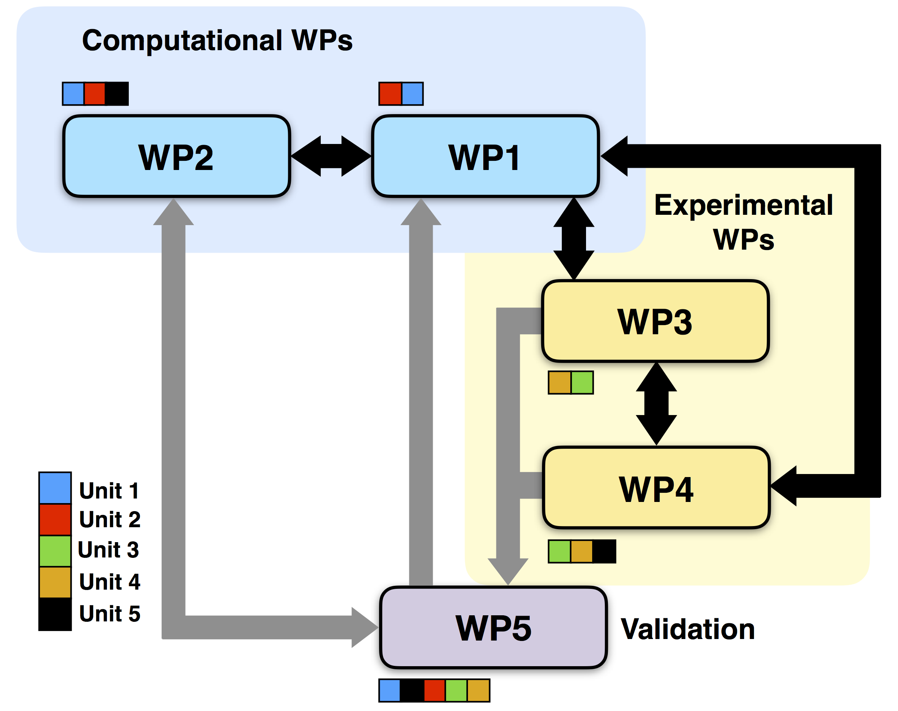

|
|
| Project Acronym: |
CeProVI |
| Project Code: |
MIUR-PRIN-201744NR8S |
| Project Title: |
Integrative tools for defining the molecular basis of the diseases:
Computational and Experimental methods for
Protein Variant Interpretation.
|
The main aim of our project consists in filling the gap between thermodynamic data and disease-related
information on protein variants. We propose to integrate theoretical/computational approaches with experimental validations
to assess the impact of amino acid variations on protein structure, function and protein-protein binding affinity.
We will generate a comprehensive database collecting all the structural and functional protein vari ants associated to diseases,
with specific reference to predicted or experimentally available thermodynamic data. Then, we will use those data to
implement customized methods for predicting the impact of variants on proteins associated to cancer and to genetic diseases
affecting calcium signalling.
Our proposal represents an unprecedented opportunity to bring together computational and experimental scientists for
creating a consortium able at characterizing the effect of genetic variants at protein level and their impact on human health.
Research Units
- Unit 1: University of Torino (Leading Unit) - Piero Fariselli.
- Unit 2: University of Bologna - Emidio Capriotti and Paola Turina.
- Unit 3: University of Verona - Daniele Dell'Orco and Mariapina D'Onofrio.
- Unit 4: University "La Sapienza" Roma - Roberta Chiaraluce and Valerio Consalvi.
- Unit 5: National Institute for Nuclear Physics (INFN) - Gaetano Salina, Silvia Morante, Giovanni La Penna.
|
Work Packages
- WP1: Development of an integrated protein variation database.
- WP2: Development of the Predictors.
- WP3: Generation of new experimental data: structural, functional and stability.
- WP4: Generation of new experimental data: binding affinity variations.
- WP5: Data validation and evaluation of the predictors.
|
Units Interaction Flowchart

|